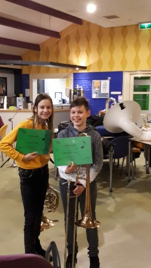
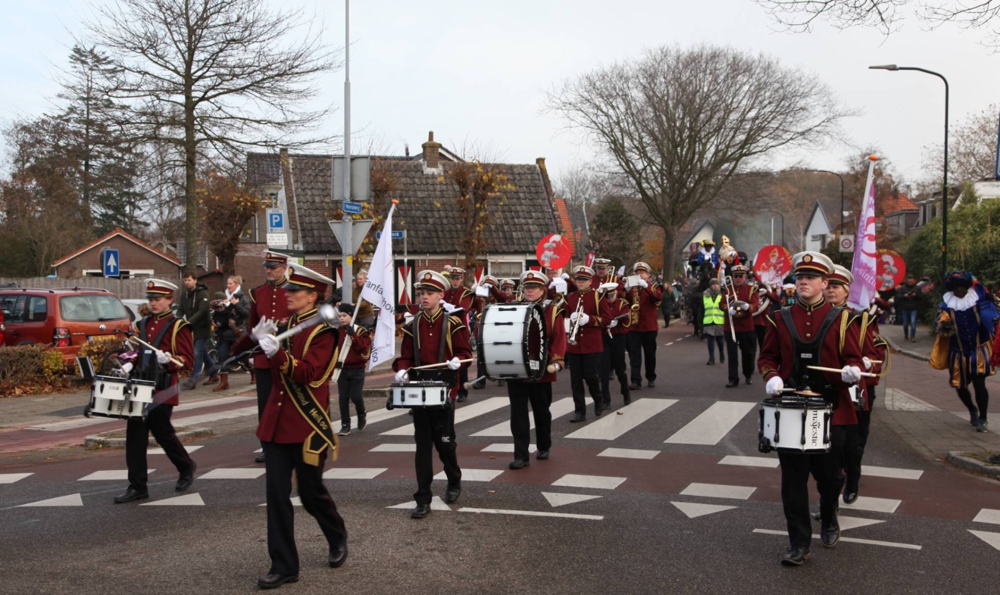
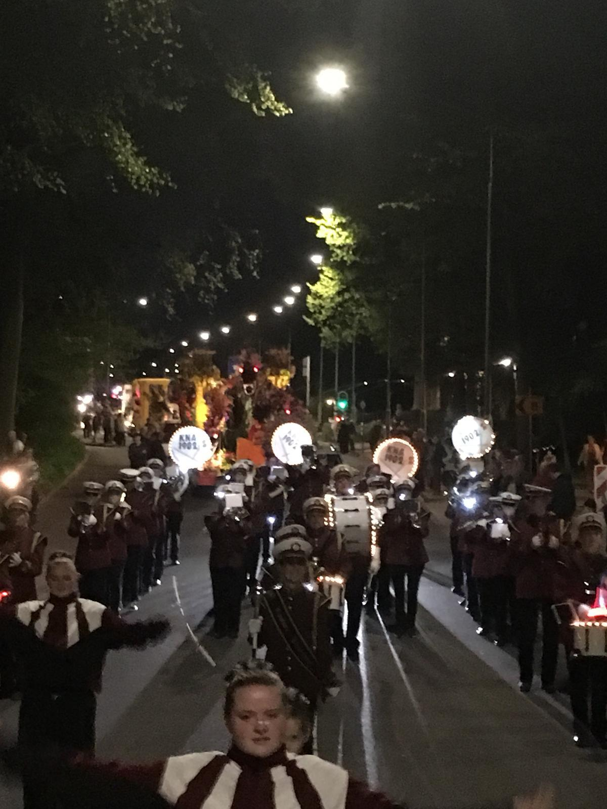
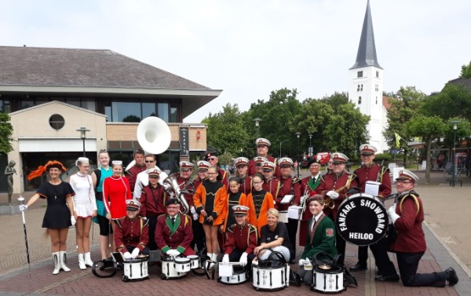

Welkom op de website van de Fanfare Showband Heiloo
Nieuws
Vanaf 11 januari 2019 hebben de majorettes een nieuwe locatie en dit is op vrijdagavond van 19:00
tot 21:00 in de gymzaal van de Radboudschool in Heiloo.
De Fanfare Showband is op zoek naar meisjes en jongens vanaf 7 jaar om het leuk vinden om een
muziekinstrument te spelen of om als majorette voor de muziek uit te lopen.
Na 26 weken is Music 4-U alweer voorbij.
Donderdag 24 januari hebben de Music 4-U leden hun oorkonde hun oorkonde gekregen na samen met het
orkest gespeeld te hebben.

Fanfare Showband Heiloo wil u erop wijzen dat wij ook dit jaar weer het oud papier bij u in de wijk
komen ophalen. Dit gebeurt op de webekende data, namelijk elke laatste zaterdag van de
maand.
Heeft u ook zo een zin om muziek te maken in een gezellige vereniging, wij zijn nog op zoek naar
medespelers in het zware werk. Ook andere blazeers zijn van harte welkom.
Fotoalbums

Sinterklaasintocht 2018

Bloemencorso

50 jaar FSH
Meer Fotoalbums >
Music 4 You
Fanfare Showband Heiloo heeft een uniek concept ontwikkeld om kinderen in de leeftijd vanaf eind 8
t/m 12 jaar in staat te stellen gratis kennis te laten maken met het maken van muziek in
groepsverband.
Op veel lscholen is de laatste jaren het muziek maken in gedrang gekomen door enerzijds geld gebrek
en anderzijds het gebrek aan bekwame muziek docenten. Echter mocht dit op uw school niet het geval
zijn, dan nog denken wij dat deze opleiding voor de kinderen een unieke kans is om eens verder in de
wereld van de muziek te kijken.
Deze cursus wordt nog niet ondersteund maar is wel in aanvraag bij gemeente Heiloo en wordt gegeven
door vakbekawme instructeurs van het conservatorium.
Er wordt les gegeven door:
Wendy van Gijlswijk en Ciska Tromp
majorettes
Bob Kanne
hoorn/saxofoon/trompet
Karel Wolfs
klarinet/trompet/saxofoon/dwarsfluit
Arnold Wardenaar
slagwerk
Met ondersteuning in lessen van de leden.
Dit programma wordt geleid door het Music 4-U team. Dit team bestaat uit:
Bob Kanne, algeheel leider
Angela Mastenbroek
Angelique Stoop
Albert Zantinge
Helma Ernest
Agenda
13
april
Bloemencorso
Heemstede / Haarlem
17
mei
Avond4Daagse
Graft de Rijp
26
mei
Music Meeting
Heiloo
7
juni
Avond4Daagse
Heemskerk
14
juni
Avond4Daagse
Heiloo
30
augustus
Lampionnenoptocht
Groet
7
oktober
Lampionnenoptocht
Alkmaar
12
oktober
Concert Witte Kerkje
Heiloo